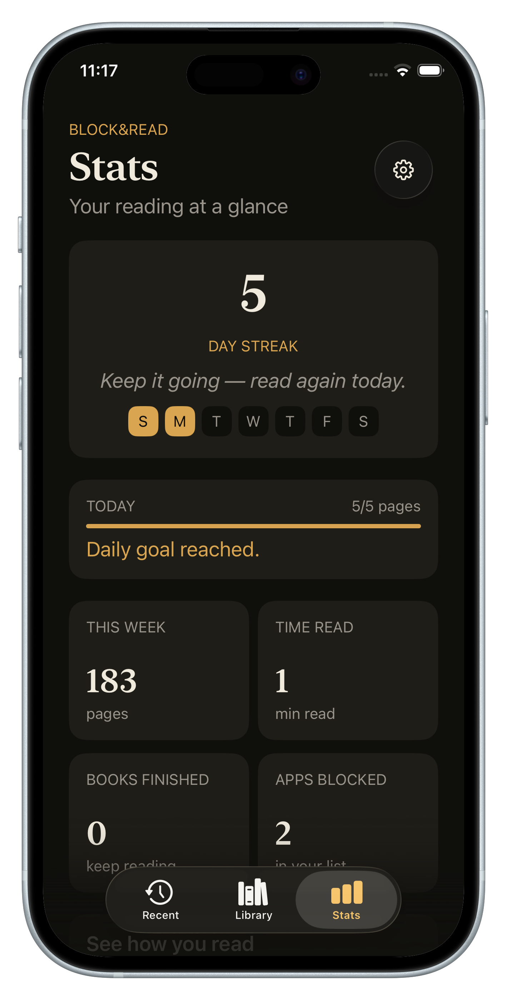

Why reading habits collapse
A habit needs three parts to run on its own: a cue that fires reliably, a routine small enough to always complete, and a reward that arrives immediately. Now look at the typical reading resolution: no fixed cue ("I'll read at some point"), an oversized routine ("a chapter every night"), and a reward — the pleasure of having read — that only pays out after the habit already exists.
Zero for three. The collapse isn't a character flaw; it's a missing loop.
Borrow the strongest cue you own
Here's the trick most habit advice misses: you don't need to create a cue. You already own the most reliable one on earth — reaching for your phone. It fires dozens of times a day, unprompted, in every mood, in every location. It currently triggers scrolling. It could trigger pages.
Habit-stacking onto the phone-reach means your reading habit inherits all that reliability for free. No alarm to ignore, no evening ritual to remember, no mood requirement. The cue comes to you, all day long.
Don't build a new trigger. Steal the best one you already have.
The loop, assembled
- Cue: you reach for a blocked app — automatic, involuntary, frequent.
- Routine: a few pages of your current book, which opens by itself at your exact spot. No decision, no setup, no "which book?"
- Reward: immediate and double — your apps unlock (the payoff your brain came for), and your streak ticks up (the payoff your brain learns to prefer).
Notice what this architecture removes: remembering (the cue is automatic), negotiation (the routine is tiny), and delayed gratification (the reward is instant). The three failure points of every reading resolution, engineered out.
Keeping it alive past week three
- Never raise the goal in a good week. Five pages on your best day and your worst day. Ambition kills more habits than laziness.
- Protect the streak, not the plan. Awful day? One page counts. The chain matters more than any single day's volume.
- Keep one book going, always. Finish one, pick the next the same day. A habit with no current book is a habit on pause, and paused habits rust.
How Block&Read assembles the loop
- Block your reflex apps — the cue is now wired: every idle reach opens your book instead.
- Set the daily goal small — pages, not minutes; hit it and your apps unlock.
- The streak and weekly heat live on your Stats screen: days read, pages this week, books finished, time won back.
- Gentle reminders nudge you if the day is slipping away with the goal unmet — no guilt, just the nudge.

Build the habit February can't kill.
Free to download · No ads, no accounts, no tracking
Get Block&Read